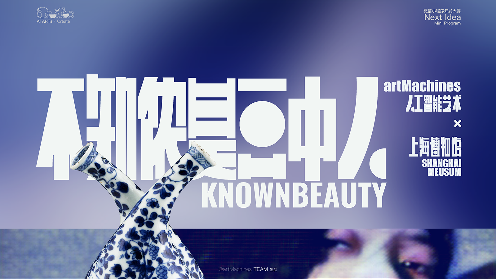
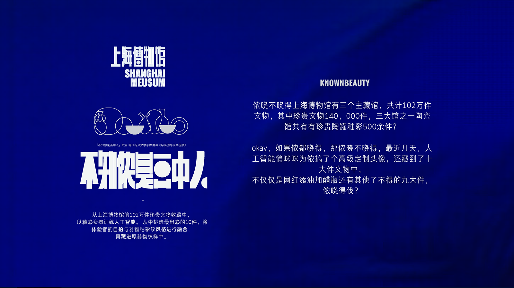
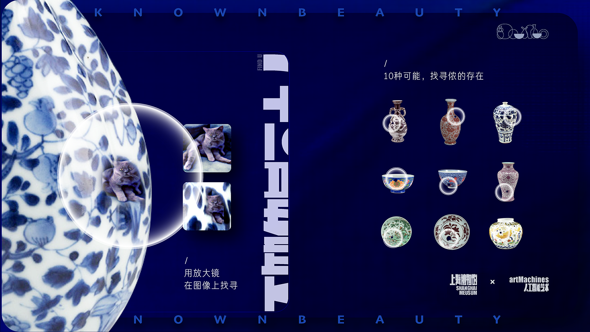
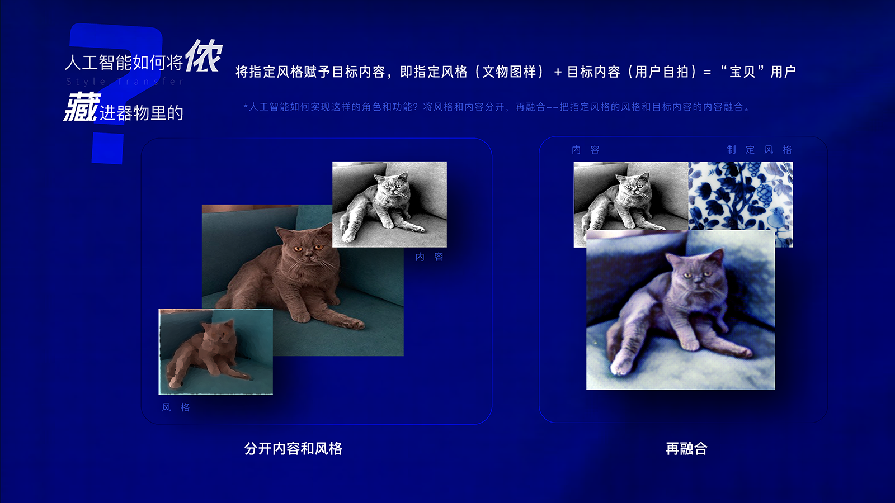
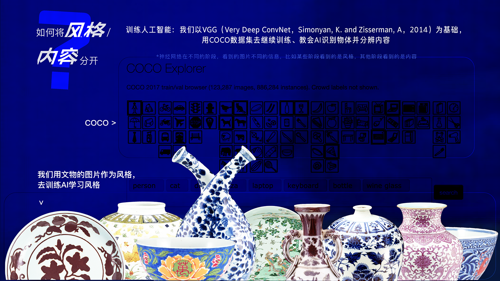
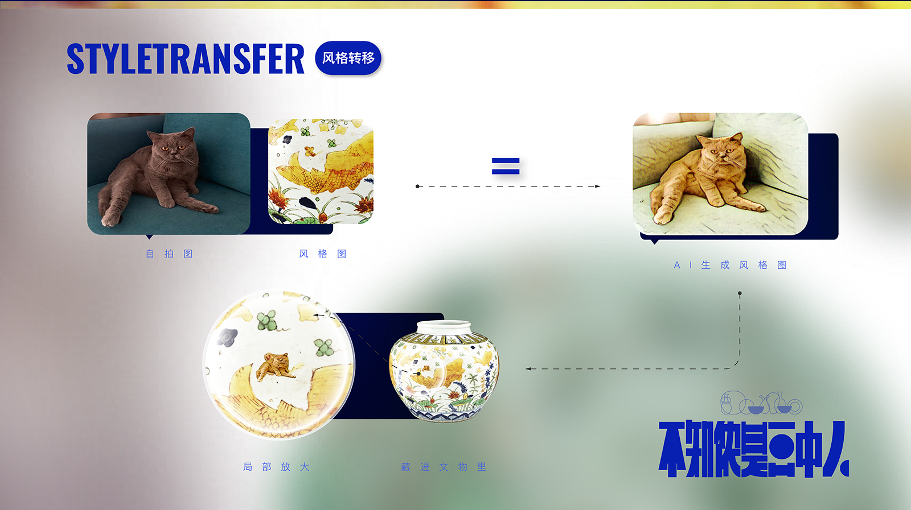
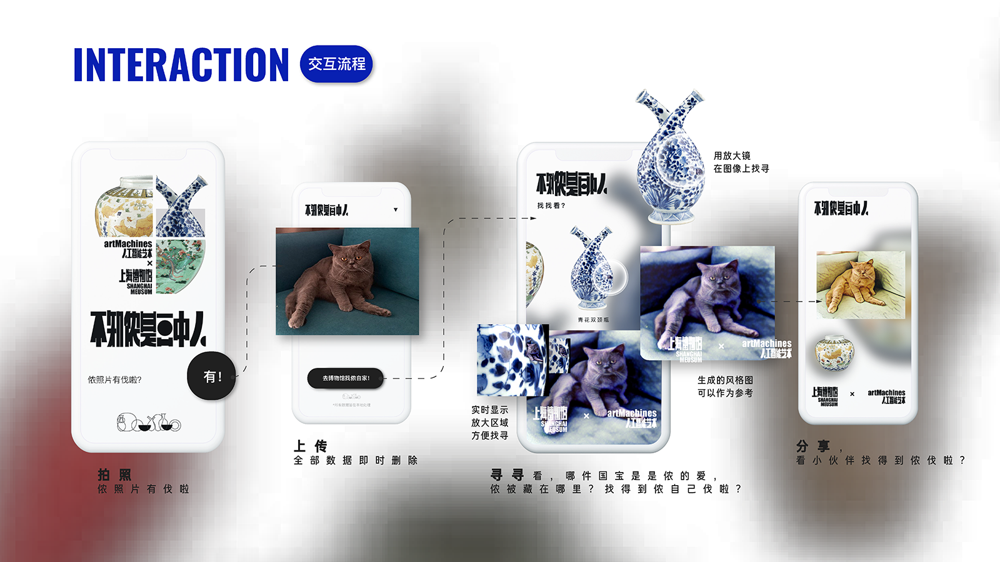
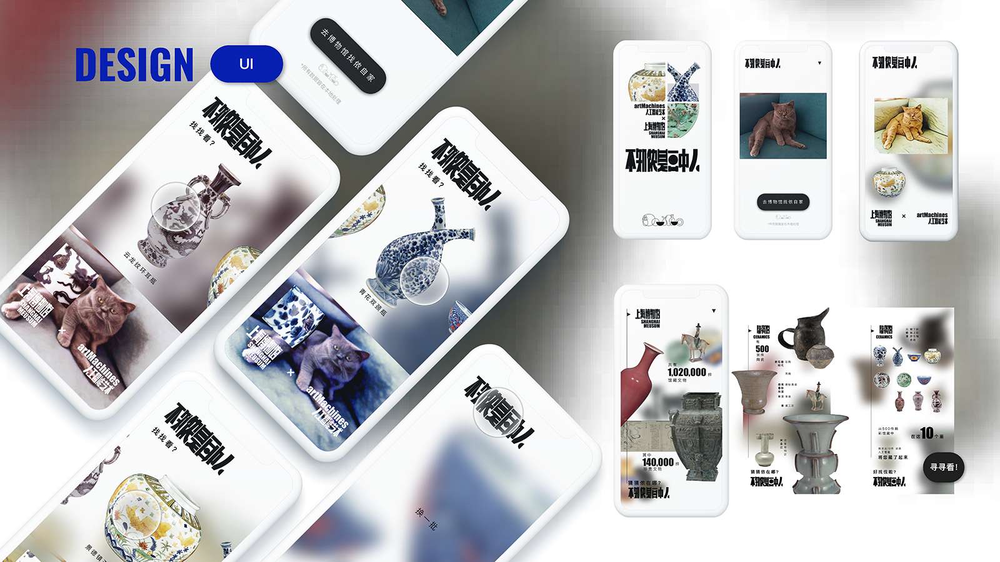

KnownBeauty
August 2019
Overview
“Known Beauty 不知侬是画中人” is a commission project by Tencent Next Idea Program. The idea is to transfer the selfie of a participant to the style of an art crafts (like ancient Chinese vases) and hide/emerge the result into the original piece. With the technology advancements in AI, we design and build softwares to bring the culture to live and present it with modern language, so to draw public's interests to the tradition.
* commissioned and supported by Tencent Ltd. and Shanghai Museum.
* first prize of Tencent Next Idea competition.
* in meida: Tencent wegeek, NextIdea腾讯创新大赛.
Screen record of the beta version / 小程序录屏
More Details







